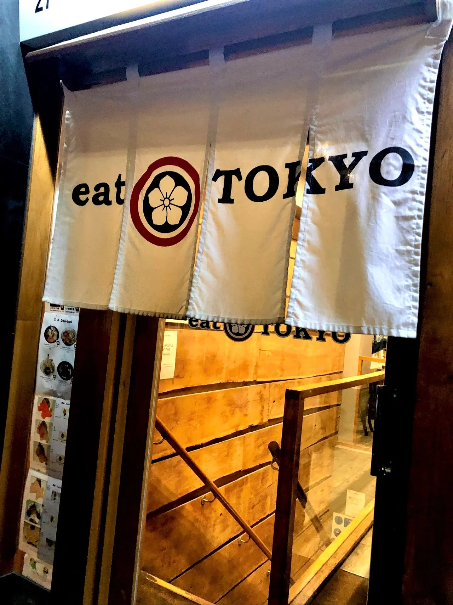

02 / BEHIND THE CURTAIN
気取らず、おいしく。
A place to eat.
A place to
feel at home.
The cream curtains, the wooden counter, the glow of the lights. Step inside and settle into the familiar rhythm of a Japanese kitchen.
Come for a quick bowl. Stay for a meal with friends. There's always something to look forward to on the table.
Find a seat near you